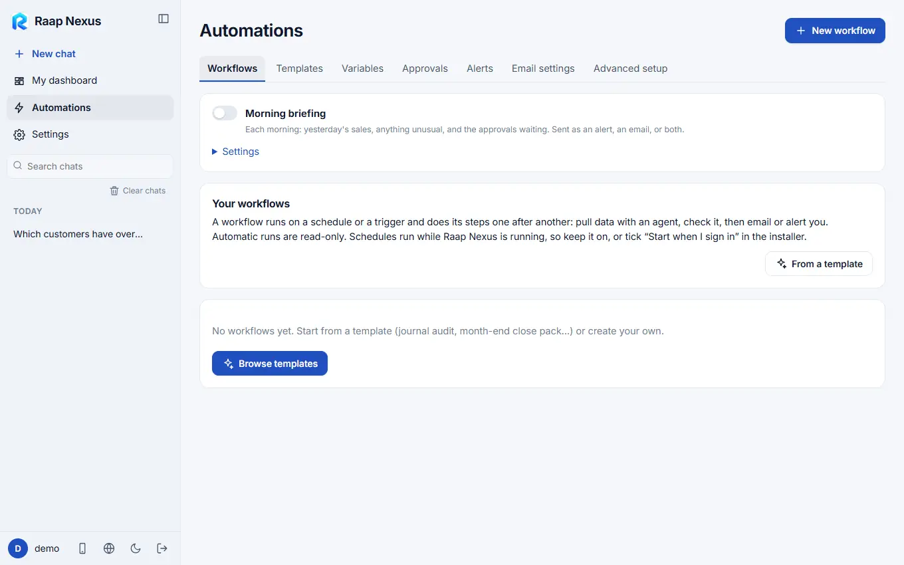
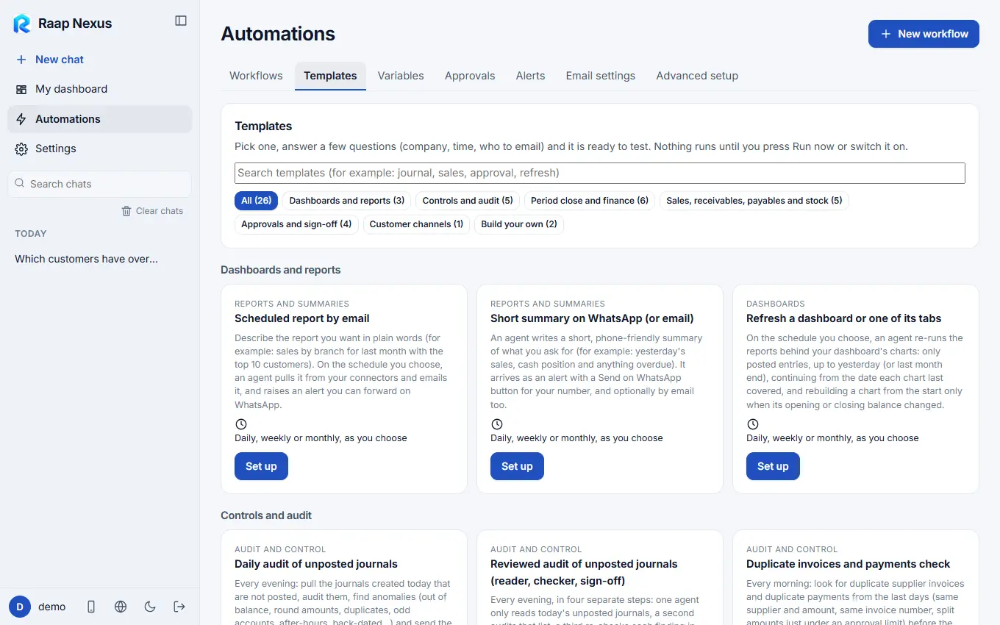
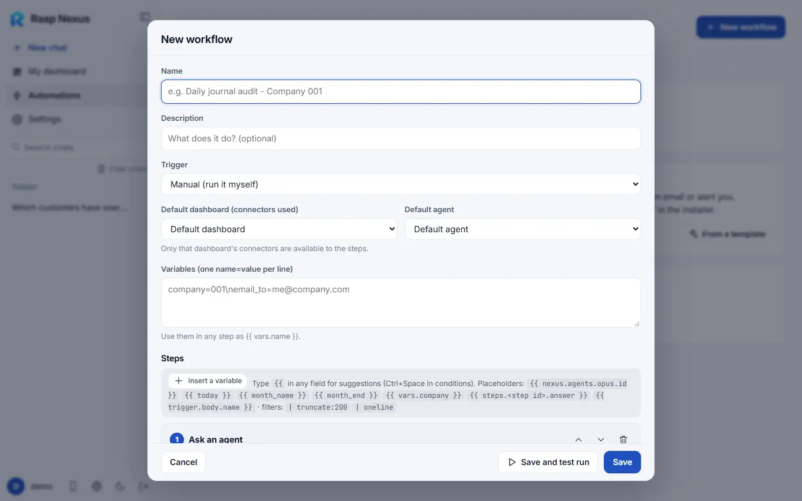

Raap Nexus
Raap NexusWorkflows and templates
A workflow runs on a schedule or a trigger and does its steps one after another: pull data, check it, then email or alert you.
What a workflow is
A workflow is a list of steps that runs by itself: ask an agent to pull data, check it, then email or alert you. Automatic runs are read-only, and every run is logged. Schedules run only while Raap Nexus is running, so keep it on, or choose start when I sign in in the installer.

Start from a template

- Open Automations > Templates (or press From a template on the Workflows tab).
- Pick one. Ready-made ones include a daily audit of unposted journals, a reviewed audit with a sign-off, a month-end close pack, a weekly overdue receivables digest, a monthly budget-vs-actual variance, a daily sales flash, a multi-level approval and an agent that answers when a web link is called.
- Answer the few questions it asks: the company, the time, who to email, which dashboard's connectors and which agent.
- Press Run now to test it. Nothing runs until you do, or switch it on.
The Morning briefing at the top of the Workflows tab is a ready-made one: each morning, yesterday's sales, anything unusual and the approvals waiting, sent as an alert, an email, or both.
Build your own
Press New workflow, name it, choose when it starts and add steps.

| Starts | Meaning |
|---|---|
| Manual | You press Run. |
| Every day, week or month | At the time you set. |
| Every few minutes or hours | A repeating interval. |
| A web link | Another system calls a link Raap Nexus creates when you save (GET or POST). The data it sends is available as {{ trigger.body.name }}. |
| A customer message | A WhatsApp or Instagram message arrived (Customer channels). |
| Step | What it does |
|---|---|
| Ask an agent | Gives an agent a task; it uses your connectors, skills and the dashboard you pick. |
| Refresh a dashboard | Re-runs the reports behind a dashboard's charts and updates them. |
| Call a connector tool | Calls one read-only tool directly, with no AI. |
| Check a condition | Stops here (as skipped) unless the condition is true. |
| Ask for approval | Several approval levels with signatures (Approvals). |
| Send an email, Raise an alert | Tell someone the result. An alert can be sent on WhatsApp in one click. |
| Message a customer | Sends a WhatsApp or Instagram message. Customer guardrails are checked first. |
| Call a web address | Calls another system with GET or POST. |
| Use a web page | Opens a page and reads it, or clicks and types. Needs the browser tool (Advanced setup). |
| Make a file | An Excel, Word or PDF from a dashboard's data. No AI is used, so no tokens are spent and the figures are exactly the dashboard's. |
| Set variables | Computes values for later steps. |
In any text field you can use values such as {{ today }}, {{ month_name }}, {{ vars.company }} and earlier results like {{ steps.audit.answer }}. Type {{ for suggestions.
Check what happened
Each workflow lists its runs with a status (OK, failed, waiting for you, skipped) and what every step did. You can re-run a run, stop one that is running, and keep answers you chose to remember so the agent does not ask again.